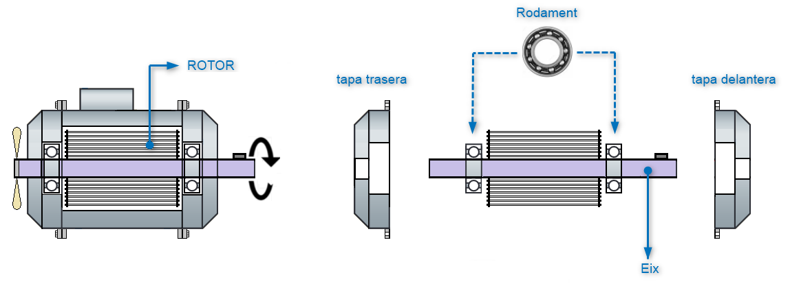
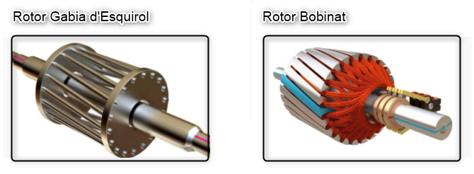
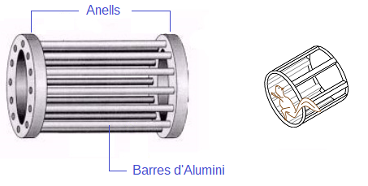
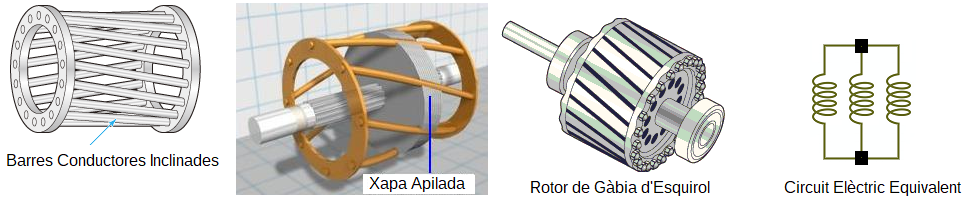
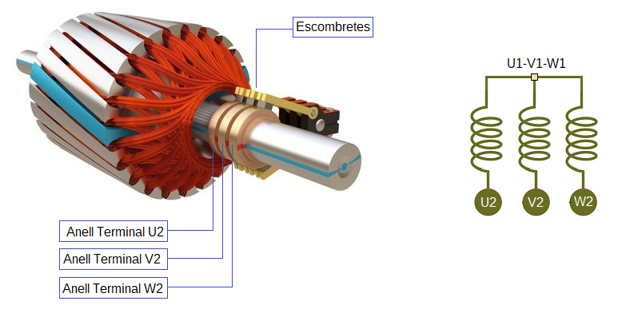
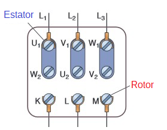

Rotor
El rotor és la part mòbil del motor d'inducció.

El rotor es munta en un eix que te dos rodaments o coixinets en els seus extrems (veure imatge). Aquest eix descansa sobre les dos tapes del motor que estan fixades a la carcassa mitjançant cargols. La funció dels rodaments és reduir la fricció entre el rotor (part mòbil) i les parts fixes del motor d'inducció: les tapes del motor. El rotor d'un motor d'inducció pot ser de dos tipus:

Rotor de Gàbia d'esquirol (Squirrel Cage Rotor)
La majoria dels motors d'inducció (fins al 90%) són de tipus gàbia d'esquirol. El rotor tipus gàbia d'esquirol té una construcció molt simple i quasi indestructible. Els conductors del rotor són barres d'alumini fos (coure o aliatges), curtcircuitades en els seus extrems mitjançant dos anells, que també són d'alumini. Aquest rotor rep aquest nom tan particular perque la seua forma recorda a la gàbia d'un esquirol.

S'ha comprovat experimentalment que el motor presenta menys vibracions i més estabilitat si les barres rotòriques s'inclinen respecte a l'eix de la gàbia. La gàbia alhora es troba embeguda a la massa ferromagnètica del rotor, que disposa de ranures per allotjar les barres conductores.

Rotor Bobinat (Slip Ring Rotor o Wound Rotor)
Avui dia aquest tipus de rotor no es sol utilitzar. El rotor està format per un nucli de forma cilíndrica que porta un bobinat trifàsic com l'estator. Els bobinats del rotor estan distribuïts per totes les ranures i internament els terminals U1, V1 i W1 estan connectats en estrella. Els altres extrems U2, V2 i W2 es connecten a tres anells lliscants aïllats fixats a l'eix del rotor.

Aquests tres anells (extrems dels bobinatges amb moviment circular) es connecten a l'exterior mitjançant tres escombretes. D'aquesta manera els extrems dels bobinatges (U2-V2-W2) del rotor són accessibles des de l'exterior mitjançant tres terminals. Aquests terminals que es troben a la caixa de connexions del motor es nomenen segons normativa com: K, L i M.

Imatges de rotors de gàbia d'esquirol


Licencia: licencia de software libre GPL